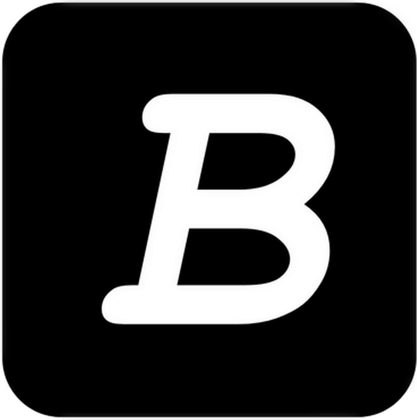

Medium TOC — by BMB
by Beyond Me Btw
Checking page...
Open TOC Panel
Open a Medium draft in edit mode first
1
Open a Medium draft
(URL must have /edit)
2
Click
Open TOC Panel
— or press
Alt+T
on the page
3
Click a paragraph in your draft, then hit
Insert